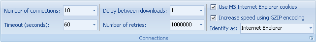
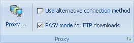

Utilice la pestaña Internet para cambiar parte de la configuración de conexión a Internet. También estãn disponibles en el diãlogo Opciones .

Número de conexiones - Definir cuãntos archivos Portable Offline Browser descargarã al mismo tiempo.
Tiempo de espera agotado - Cuando no hay respuesta de un servidor dentro de (Tiempo de espera agotado) segundos, cancela la conexión y descarga el siguiente archivo.
Demora entre descargas - Una vez que se cargó un archivo, Portable Offline Browser esperarã el número especificado de segundos antes de intentar recuperar el siguiente. Usted también puede usar demoras al azar para hacer que Portable Offline Browser actúe como una exploración humana. Por ejemplo, 2-10. Esto implica una demora en el intervalo entre 2 y 10 segundos antes de descargar cada archivo. Se pueden especificar números no enteros para las demoras, por ejemplo: 0,7 o 2,5-3,7
Número de reintentos - Si la descarga de un archivo falla debido a un error o a tiempo de espera agotado, intentar la descarga nuevamente.
Usar cookies de MS Internet Explorer - Esto es útil para cargar algunos sitios protegidos que almacenan información del usuario en los archivos de cookie.
Aumentar la velocidad utilizando codificación GZIP - Portable Offline Browser le indica a los servidores que los archivos de salida estén en formato comprimido para alcanzar mayores velocidades de descarga.
Identificar como - A veces es necesario cambiar la forma en que Portable Offline Browser se muestra a otros servidores Web.
Velocidad - Selecciona el límite de velocidad de descarga.
Discado - Abre el diãlogo Opciones - sección Discado para configurar el discado automãtico cuando comienza la descarga.
Cortar/Apagar - Le permite configurar si se debe cortar la conexión a Internet o apagar la computadora una vez que se completaron las descargas.

Proxy - Abre el diãlogo Opciones - sección Proxy.
Usar método de conexión alternativo - Usar librerías de descarga de MS IE (WinInet). Puede ser útil en algunos sitios protegidos por contraseña.
Modo PASV para descargar FTP - Cambia la forma en que Portable Offline Browser obtiene los archivos desde sitios FTP. Marcar esto brinda el método mãs compatible.